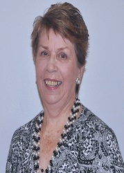

Carol has been a leading figure in music performances in Townsville for many years despite living in Ingham until the early 2000s when she moved to Townsville. Carol is a piano teacher, accompanist, and musical director of the Australian Concerto and Vocal Competition which she has led since 1991.She was involved with the others in the formation of the Barrier Reef Orchestra, and was chairperson of the North Queensland Ensembles Committee (the parent organization for the Orchestra), a position she held until 2003.
Carol Dall'Osto